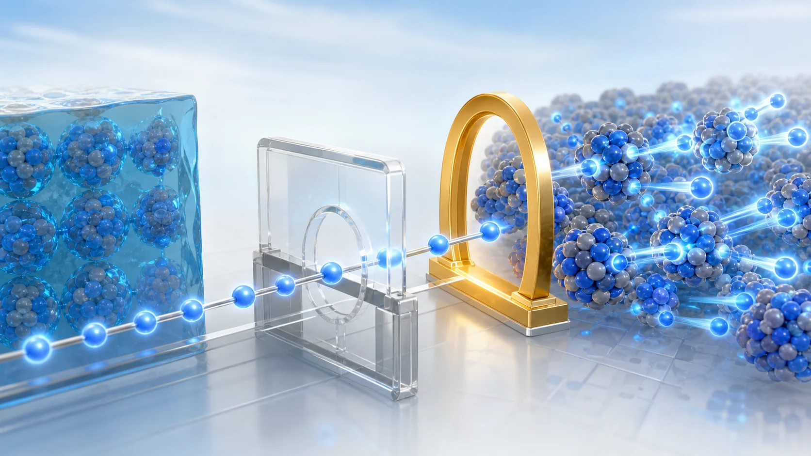
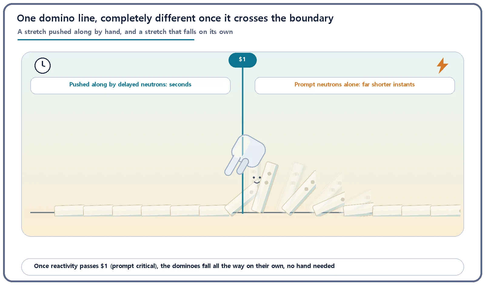
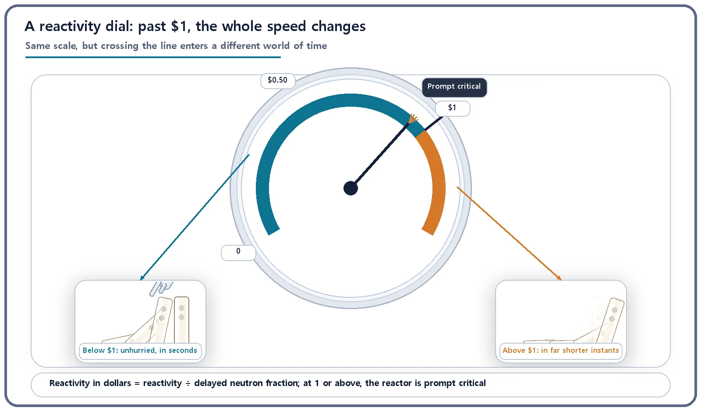

Reactor Kinetics & Reactivity · 103
Dominoes That Fall All the Way on Their Own — Why Prompt Criticality Is a Special Boundary
Below one dollar, delayed neutrons keep the pace in seconds. Past it, prompt neutrons alone set a far faster clock.

Prompt criticality is the point where reactivity equals the delayed neutron fraction β (one dollar), so prompt neutrons alone can sustain the chain reaction. Below it, delayed neutrons set a pace measured in seconds; above it, the prompt neutron generation time of a few hundred microseconds takes over. That jump in time scale is why power reactors are designed never to approach it.
Two lines of dominoes
Picture two lines of dominoes. In the first, someone kneels beside the line and, each time a domino falls, gives the next one a gentle fingertip nudge; only that way does the line keep going. In the second, one tap at the start is enough: after that, no hand is needed, and the whole line topples to the end by itself.
Both lines end the same way, with fallen dominoes. But they are completely different stories. In the first, the person can set the pace and even stop the line halfway. In the second, once it starts, there is no room for a person to step in. A reactor has two states that match these two lines exactly, and the boundary between them has a name: prompt criticality.
A reactor's dominoes always have a "hand" beside them
A quick refresher. Most of the neutrons released in fission (more than 99%) are prompt neutrons, which fly out the instant the nucleus splits. A tiny share (about 0.65%) are delayed neutrons, which appear only after a fission fragment undergoes beta decay. Because delayed neutrons arrive several seconds to tens of seconds late, the reactor as a whole changes at a relaxed pace measured in seconds, slow enough for people and control rods to keep up.
In domino terms: even while a reactor is raising its power normally, prompt neutrons alone are usually just a little too weak to carry the line all the way. Delayed neutrons act as the "hand" that supplies the missing last inch, and not instantly, but seconds later, one gentle push at a time. So even in the common situation where a reactor raises power (reactivity pushes it past critical into supercritical), the domino line actually keeps going only with the help of this unhurried hand. That hand is why the reaction unfolds gradually, over seconds.
The moment the hand is no longer needed
Once reactivity passes a certain threshold, though, the picture changes completely. The reactor reaches a state where prompt neutrons alone, without any help from that unhurried hand, can carry the dominoes to the end. Reactivity can be expressed in units of the delayed neutron fraction (β, about 0.65%), a unit called the "dollar," and this boundary is exactly where reactivity reaches one dollar. It is called prompt criticality, or prompt critical.
The moment the reactor crosses it (strictly, anything beyond is called prompt supercritical), the hand has no job left on this line. The dominoes don't wait for a fingertip; touch them once and they fall all the way by themselves. And that is what makes this boundary special: the speed at which the dominoes fall changes completely.

Why "special"? The time scale itself jumps
While reactivity is below one dollar, the whole line moves at the rhythm of that unhurried hand, the delayed neutrons. So as reactivity grows a little, the reactor's response speeds up smoothly, only on the scale of seconds. That leaves people enough time to read instruments, decide and move control rods.
The moment reactivity passes one dollar, what sets the speed of the line changes. It is no longer the unhurried hand (delayed neutrons, seconds) but the time for one generation of prompt neutrons to give way to the next: a few hundred microseconds, hundreds to thousands of times shorter than the effective generation time that includes delayed neutrons. The reaction starts to proceed not in seconds but on a time scale several orders of magnitude shorter. The reactivity number itself runs smoothly across one dollar, yet what it uses as its clock is, in effect, swapped out wholesale at that point. One continuously changing number suddenly carries the reactor into a completely different world of time. That is why prompt criticality should be understood not as a simple "danger line" but as the boundary at which controllability itself divides.
Put as simply as possible, the relationship is:
Reactivity in dollars = reactivity ÷ delayed neutron fraction (β)
Prompt critical condition: reactivity in dollars ≥ 1

| Reactivity in dollars | What sustains the chain | Speed set by | Time scale |
|---|---|---|---|
| below $1 | Prompt plus delayed neutrons | Delayed-neutron delay | Seconds |
| $1 or more | Prompt neutrons alone | Prompt neutron generation time | A few hundred microseconds or less |
So reactors never cross this line
A power reactor in normal operation actually passes through a supercritical state every time it raises power. That is entirely common and normal. But that supercriticality always has the unhurried hand's help; it is never the hand-free prompt supercritical state. Reactors are designed and operated with multiple layers of margin so that reactivity never reaches one dollar (prompt critical) in any normal operating situation, or even in analyses that assume design-basis accidents.
For example, the maximum reactivity that withdrawing or inserting a single control rod at once can add is limited at the design stage; the core is designed with feedback that pushes reactivity down by itself when core temperature or coolant density changes; and operating actions that could insert a large amount of reactivity at once are restricted by procedures and safety interlocks. These layers work together to make sure the unhurried hand always stays on the line, keeping reactivity away from the one-dollar threshold. (Actual design-basis limits, such as the maximum reactivity from withdrawing a single rod, differ by reactor type and licensing documents, so no specific figures are given here.)
For context, some special pulsed research reactors, built for purposes entirely different from commercial power reactors, are known to cross this boundary deliberately, for very brief moments and under defined safety procedures, for nuclear-property experiments. That is an exception that sits apart from the main point. For the power reactors we run to make electricity, this boundary is always treated as a line you never approach.
Two common misunderstandings
Misunderstanding 1: "Supercritical means dangerous." No. The supercritical state a reactor passes through every time it raises power is helped along by delayed neutrons and is an entirely normal, everyday operating state. What matters for safety is not the word "supercritical" but whether that supercriticality is prompt supercritical, sustained without delayed neutrons.
Misunderstanding 2: "Cross prompt criticality and it explodes on the spot." Not so. Crossing prompt criticality means the reaction speeds up beyond what people and control systems can follow; it does not by itself mean an explosion. That is why nuclear safety design focuses on never approaching this boundary in the first place.
The takeaways
- Prompt criticality is the boundary where reactivity grows to equal the delayed neutron fraction (one dollar), so that prompt neutrons alone can sustain and grow the chain reaction without delayed neutrons.
- Below it, the reaction's speed is governed by the delay of delayed neutrons (seconds); past it, by the generation time of prompt neutrons (a far shorter time scale), so the order of magnitude of time itself changes.
- Supercritical and prompt supercritical are different: supercritical is a common normal operating state, and only prompt supercritical (past prompt criticality) calls for special vigilance.
- Power reactors are designed and operated with multiple layers of margin so they never reach the one-dollar boundary under any circumstances.